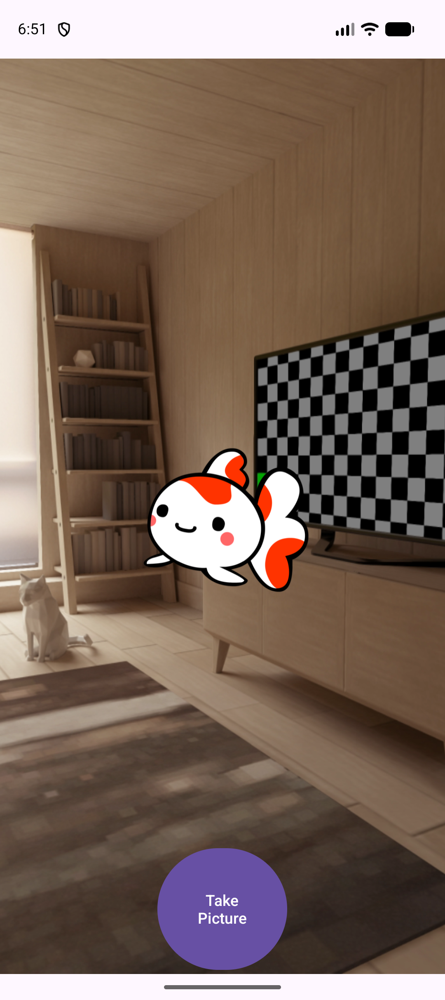
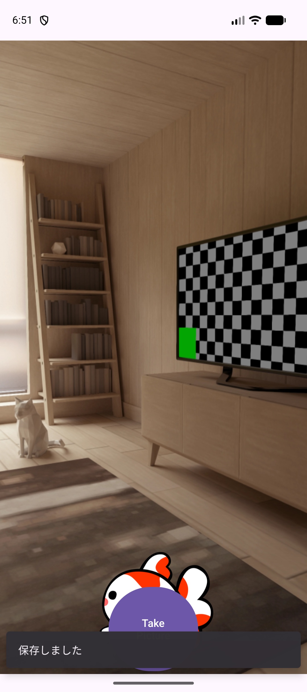
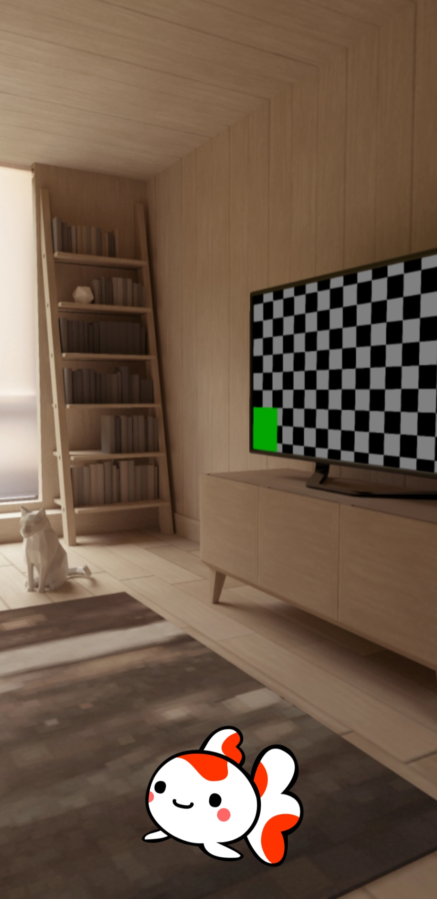
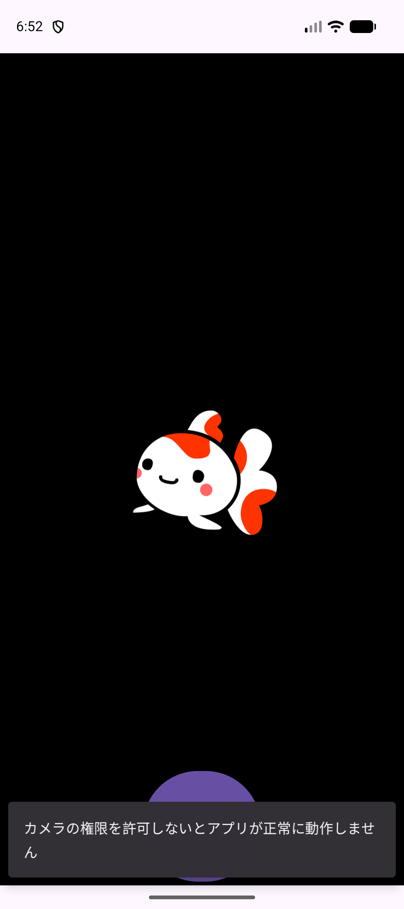

KOTLIN PROGRAMMING EXERCISES / A04
カメラにキャラクターを
重ねよう
金魚を指で動かし、カメラの映像と組み合わせた1枚を保存します。
対象：A04FunnyCamera / パッケージ：jp.ac.jec.a04funnycamera
14〜15コマ目・各90分 / Android Studio Panda 2 / macOS
この単元で作るもの
カメラの上にキャラクターを重ねるアプリ。14コマ目でプレビューとドラッグ、15コマ目で合成画像の保存へ進みます。
今日の画面を先に見る
開くIDEは Android Studio Panda 2 です。今日はカメラ映像の上に金魚を重ね、指で動かします。次のコマでその組み合わせを画像として保存します。見本の映像はエミュレータ内の仮想の部屋です。

教科書とAndroid Studioを並べます。実行先は jec_25cm_kotlin_Pixel 9a。別のAndroid Studioの版を使っている場合は、作成前に先生へ画面を見せてください。
Java／Swiftとの比較
Kotlin
val title = "A04FunnyCamera"Swift
let title = "A04FunnyCamera"POINT
Swiftのletに対応するKotlinのvalを使います。以後も比較欄のJava／Swiftは読むための見本で、Android Studioに貼るのはKotlinです。
ここで止まって確認
できたらチェックします。止まったときは、この画面を先生に見せましょう。
自分のA04プロジェクトを作る
- New Project、または File → New → New Project… を選びます。
- Phone and Tablet → Empty Views Activity → Next を選びます。
Empty ActivityはCompose用です。 - 次の表を入力して Finish。Gradle同期が終わるまで待ちます。
| 項目 | 入力・選択 |
|---|---|
| Name | A04FunnyCamera |
| Package name | jp.ac.jec.a04funnycamera |
| Save location | /Users/ユーザ名/Documents/Kotlin/A04FunnyCamera |
| Language | Kotlin |
| Minimum SDK | API 31（Android 12） |
| Build configuration language | Kotlin DSL (build.gradle.kts) |
ユーザ名 は自分のMacの名前に置き換えます。Save locationはプロジェクト名まで含めます。書類へのアクセスを聞かれたら自分の保存先を読むために許可します。同期の赤いエラーが消えないときは先生に画面を見せます。
左のProjectツールウィンドウは Project 表示にします。Kotlinファイルの置き場は app/src/main/java/jp/ac/jec/a04funnycamera/。以後この教科書で「パッケージ」と書いたら、この場所です。
Java／Swiftとの比較
Kotlin
class MainActivity : AppCompatActivity()Java
public class MainActivity extends AppCompatActivity {
}POINT
Kotlinの : はJavaのextendsに対応します。親のコンストラクタを呼ぶ括弧も残します。Empty Views ActivityならXMLとActivityが組になります。
ここで止まって確認
できたらチェックします。止まったときは、この画面を先生に見せましょう。
カメラのライブラリをそろえる
次の3ファイルを、パスを確かめて全文置換してから同期します。作成日によるライブラリの差をそろえます。Panda 2で作った構成が前提で、別の版のAGP番号だけを下げる手順ではありません。
gradle/libs.versions.toml。CameraXの4つとlifecycleを使います。
[versions]
agp = "9.1.1"
coreKtx = "1.17.0"
junit = "4.13.2"
junitVersion = "1.3.0"
espressoCore = "3.7.0"
appcompat = "1.8.0"
material = "1.14.0"
activity = "1.13.0"
constraintlayout = "2.2.2"
camera = "1.4.2"
lifecycle = "2.9.4"
[libraries]
androidx-core-ktx = { group = "androidx.core", name = "core-ktx", version.ref = "coreKtx" }
junit = { group = "junit", name = "junit", version.ref = "junit" }
androidx-junit = { group = "androidx.test.ext", name = "junit", version.ref = "junitVersion" }
androidx-espresso-core = { group = "androidx.test.espresso", name = "espresso-core", version.ref = "espressoCore" }
androidx-appcompat = { group = "androidx.appcompat", name = "appcompat", version.ref = "appcompat" }
material = { group = "com.google.android.material", name = "material", version.ref = "material" }
androidx-activity = { group = "androidx.activity", name = "activity", version.ref = "activity" }
androidx-constraintlayout = { group = "androidx.constraintlayout", name = "constraintlayout", version.ref = "constraintlayout" }
androidx-lifecycle-runtime-ktx = { group = "androidx.lifecycle", name = "lifecycle-runtime-ktx", version.ref = "lifecycle" }
camera-camera2 = { module = "androidx.camera:camera-camera2", version.ref = "camera" }
camera-core = { module = "androidx.camera:camera-core", version.ref = "camera" }
camera-lifecycle = { module = "androidx.camera:camera-lifecycle", version.ref = "camera" }
camera-view = { module = "androidx.camera:camera-view", version.ref = "camera" }
[plugins]
android-application = { id = "com.android.application", version.ref = "agp" }
プロジェクト直下の build.gradle.kts。
// Top-level build file where you can add configuration options common to all sub-projects/modules.
plugins {
alias(libs.plugins.android.application) apply false
}app/build.gradle.kts。こちらはappフォルダの中です。
plugins {
alias(libs.plugins.android.application)
}
android {
namespace = "jp.ac.jec.a04funnycamera"
compileSdk {
version = release(36) {
minorApiLevel = 1
}
}
defaultConfig {
applicationId = "jp.ac.jec.a04funnycamera"
minSdk = 31
targetSdk = 36
versionCode = 1
versionName = "1.0"
testInstrumentationRunner = "androidx.test.runner.AndroidJUnitRunner"
}
buildTypes {
release {
isMinifyEnabled = false
proguardFiles(
getDefaultProguardFile("proguard-android-optimize.txt"),
"proguard-rules.pro"
)
}
}
compileOptions {
sourceCompatibility = JavaVersion.VERSION_11
targetCompatibility = JavaVersion.VERSION_11
}
}
dependencies {
implementation(libs.androidx.activity)
implementation(libs.androidx.appcompat)
implementation(libs.androidx.constraintlayout)
implementation(libs.androidx.core.ktx)
implementation(libs.androidx.lifecycle.runtime.ktx)
implementation(libs.material)
testImplementation(libs.junit)
androidTestImplementation(libs.androidx.espresso.core)
androidTestImplementation(libs.androidx.junit)
// TODO STEP01: cameraxライブラリを追加する - START
implementation(libs.camera.core)
implementation(libs.camera.camera2) // これ追加しないと、実行時エラーになる
implementation(libs.camera.lifecycle)
implementation(libs.camera.view)
// END
}Sync Now（出ていなければ File → Sync Project with Gradle Files）を実行します。SDKの追加を聞かれたら内容を確認して先生と進めます。gradle/wrapper/gradle-wrapper.properties のGradleは 9.3.1、AGPは 9.1.1、compileSdkは 36.1、targetSdkは 36 です。同期のエラーが残ったらその画面で止まります。
| 依存関係 | 使う場所 |
|---|---|
| camera-core | Preview・CameraSelector |
| camera-camera2 | CameraXが内部で使う背面カメラの実装 |
| camera-lifecycle | Activityにプレビューを結び付ける |
| camera-view | XMLのPreviewView |
| lifecycle-runtime-ktx | 保存処理を起動するlifecycleScope |
Java／Swiftとの比較
Kotlin
val preview = Preview.Builder().build()Java
Preview preview = new Preview.Builder().build();POINT
Javaと同じライブラリをKotlinから使えます。Kotlinではnewを書きません。camera-camera2は本文にimportがなくても実行時に必要です。
ここで止まって確認
できたらチェックします。止まったときは、この画面を先生に見せましょう。
カメラの使用を宣言する
app/src/main/AndroidManifest.xml を全文置換します。uses-permission はapplicationの外です。
<?xml version="1.0" encoding="utf-8"?>
<manifest xmlns:android="http://schemas.android.com/apk/res/android">
<uses-feature
android:name="android.hardware.camera.any"
android:required="true" />
<uses-permission android:name="android.permission.CAMERA" />
<application
android:allowBackup="true"
android:dataExtractionRules="@xml/data_extraction_rules"
android:fullBackupContent="@xml/backup_rules"
android:icon="@mipmap/ic_launcher"
android:label="@string/app_name"
android:roundIcon="@mipmap/ic_launcher_round"
android:supportsRtl="true"
android:theme="@style/Theme.A04FunnyCamera">
<activity
android:name=".MainActivity"
android:exported="true"
android:windowSoftInputMode="adjustResize">
<intent-filter>
<action android:name="android.intent.action.MAIN" />
<category android:name="android.intent.category.LAUNCHER" />
</intent-filter>
</activity>
</application>
</manifest>CAMERA はカメラを使う宣言です。これだけで許可にはならず、実行時にダイアログで選びます。camera.any はカメラを必要とする宣言で、背面の選択は後でKotlinに書きます。テーマ名は生成済みの Theme.A04FunnyCamera と一致させます。
このSTEPではファイルを保存します。権限のダイアログを動かすのはSTEP 06です。
Java／Swiftとの比較
Kotlin
requestCameraPermission.launch(Manifest.permission.CAMERA)Java
requestCameraPermission.launch(Manifest.permission.CAMERA);POINT
同じAndroid APIをJavaからも呼べます。権限名は文字列の手入力を避け、Manifest.permission.CAMERAを使います。
ここで止まって確認
できたらチェックします。止まったときは、この画面を先生に見せましょう。
金魚を置いてドラッグ用のViewを作る
金魚の画像 character.png を保存し、Finderから自分の A04FunnyCamera/app/src/main/res/drawable/ へコピーします。保存時に別名になったら character.png に直します。drawable の直下です。画像は背景が透過した500×416ピクセルで、完成版と同じものです。
{kind=link}
Android Studioでパッケージ jp.ac.jec.a04funnycamera を右クリックし、New → Kotlin Class/File。名前 DraggableImageView、種類 Class で作成し、次の全文に置き換えます。
package jp.ac.jec.a04funnycamera
import android.content.Context
import android.util.AttributeSet
import android.view.MotionEvent
import android.view.View
import androidx.appcompat.widget.AppCompatImageView
/**
* 指でドラッグして移動できるImageView
*
* 親Viewの内側からはみ出さない範囲で移動する
*/
class DraggableImageView(context: Context, attrs: AttributeSet?) :
AppCompatImageView(context, attrs) {
// タッチした位置とこのViewの左上の差分
private var offsetX = 0f
private var offsetY = 0f
override fun onTouchEvent(event: MotionEvent): Boolean {
when (event.actionMasked) {
MotionEvent.ACTION_DOWN -> {
offsetX = x - event.rawX
offsetY = y - event.rawY
}
MotionEvent.ACTION_MOVE -> {
moveTo(event.rawX + offsetX, event.rawY + offsetY)
}
MotionEvent.ACTION_UP -> performClick() // （アクセシビリティ対応）
}
return true
}
/**
* onTouchEventをオーバーライドしたViewは、performClickもオーバーライドする必要がある
* (オーバーライドしないとLintがアクセシビリティの警告 ClickableViewAccessibility を出す)
*/
override fun performClick(): Boolean {
return super.performClick()
}
/**
* 指定した位置に移動する (親Viewの内側からはみ出さないように位置を補正する)
*/
private fun moveTo(newX: Float, newY: Float) {
val parentView = parent as View
// 親Viewのpaddingを除いた範囲の左上と右下
val minX = parentView.paddingLeft.toFloat()
val minY = parentView.paddingTop.toFloat()
val maxX = (parentView.width - parentView.paddingRight - width).toFloat()
val maxY = (parentView.height - parentView.paddingBottom - height).toFloat()
// 親Viewがこのviewより小さい場合 (分割画面など) は、coerceInが例外になるため移動しない
if (maxX < minX || maxY < minY) return
// coerceIn: 値を min〜max の範囲に収める
x = newX.coerceIn(minX, maxX)
y = newY.coerceIn(minY, maxY)
}
}
| 処理 | このコードでしていること |
|---|---|
| ACTION_DOWN | 親内のView位置x/yと、画面上の指の位置rawX/rawYの差を記録する。 |
| ACTION_MOVE | 指の新しい位置に差を足して、最初につかんだ位置を保つ。 |
| moveTo | 親のpaddingとViewの大きさを引き、coerceInで端に止める。 |
| ACTION_UP／performClick | 指を離したときにViewのクリック処理を呼ぶ。警告をSuppressで隠さない。 |
まだXMLに配置していないので、この時点では画面は変わりません。次のSTEPでこのクラスをタグ名に使います。
Java／Swiftとの比較
Kotlin
class DraggableImageView(context: Context, attrs: AttributeSet?) :
AppCompatImageView(context, attrs)Java
public class DraggableImageView extends AppCompatImageView {
public DraggableImageView(Context context, AttributeSet attrs) {
super(context, attrs);
}
}POINT
プライマリコンストラクタは、Javaでクラス本体に書くコンストラクタの引数をクラス名の後へ出す形です。XMLから渡されるContextとAttributeSetを親へ渡します。
ここで止まって確認
できたらチェックします。止まったときは、この画面を先生に見せましょう。
映像・金魚・ボタンを重ねる
app/src/main/res/layout/activity_main.xml を開き、Code 表示で全文置換します。
<?xml version="1.0" encoding="utf-8"?>
<FrameLayout xmlns:android="http://schemas.android.com/apk/res/android"
xmlns:tools="http://schemas.android.com/tools"
android:id="@+id/main"
android:layout_width="match_parent"
android:layout_height="match_parent"
tools:context=".MainActivity">
<androidx.camera.view.PreviewView
android:id="@+id/preview_view"
android:layout_width="match_parent"
android:layout_height="match_parent" />
<!-- 指でドラッグして動かせるキャラクター -->
<jp.ac.jec.a04funnycamera.DraggableImageView
android:id="@+id/iv_character"
android:layout_width="200dp"
android:layout_height="200dp"
android:layout_gravity="center"
android:contentDescription="キャラクター"
android:scaleType="fitCenter"
android:src="@drawable/character" />
<Button
android:id="@+id/btn_take_picture"
android:layout_width="120dp"
android:layout_height="120dp"
android:layout_gravity="bottom|center_horizontal"
android:text="Take Picture" />
</FrameLayout>
FrameLayoutは後に書いたViewが手前です。PreviewView → 金魚 → ボタンの順なので、金魚を下へ動かすとボタンに隠れる部分があります。XMLのカスタムViewはパッケージ名まで含むクラス名です。@drawable/character に拡張子は付けません。
この時点のPreviewはカメラ映像を表示しません。XMLの赤い参照が消えたら、STEP 06で起動します。
Java／Swiftとの比較
Kotlin
characterView = findViewById(R.id.iv_character)Java
characterView = findViewById(R.id.iv_character);POINT
XMLとKotlinの接点はidです。Javaでも同じfindViewByIdを使えます。変数の型ImageViewは、子クラスDraggableImageViewを受け取れます。
ここで止まって確認
できたらチェックします。止まったときは、この画面を先生に見せましょう。
権限を受け取りプレビューを起動する
MainActivity.kt を次の全文に置き換えます。これは14コマ目の途中コードです。Take Pictureは確認メッセージを出すだけで、まだ保存しません。
package jp.ac.jec.a04funnycamera
import android.Manifest
import android.os.Bundle
import android.util.Log
import android.widget.Button
import android.widget.ImageView
import androidx.activity.enableEdgeToEdge
import androidx.activity.result.contract.ActivityResultContracts.RequestPermission
import androidx.appcompat.app.AppCompatActivity
import androidx.camera.core.CameraSelector
import androidx.camera.core.Preview
import androidx.camera.lifecycle.ProcessCameraProvider
import androidx.camera.view.PreviewView
import androidx.core.content.ContextCompat
import androidx.core.view.ViewCompat
import androidx.core.view.WindowInsetsCompat
import com.google.android.material.snackbar.Snackbar
/**
* カメラのプレビューにキャラクターを重ねて、その画面を画像として保存するActivity
*
* - キャラクターは指でドラッグして動かせる (DraggableImageView)
* - 14コマ目はプレビューと移動を確認する。画像の保存は15コマ目で追加する
*/
class MainActivity : AppCompatActivity() {
/**
* カメラ権限のリクエスト結果を受け取るためのActivityResultLauncher
*/
private val requestCameraPermission =
registerForActivityResult(RequestPermission()) { isGranted ->
Log.d(TAG, "isGranted: $isGranted")
if (isGranted) {
startCamera()
} else {
Log.w(TAG, "カメラの権限を許可しないとアプリが正常に動作しません")
Snackbar.make(
findViewById(R.id.main),
"カメラの権限を許可しないとアプリが正常に動作しません",
Snackbar.LENGTH_LONG
).show()
}
}
private lateinit var previewView: PreviewView
private lateinit var characterView: ImageView
override fun onCreate(savedInstanceState: Bundle?) {
super.onCreate(savedInstanceState)
enableEdgeToEdge()
setContentView(R.layout.activity_main)
ViewCompat.setOnApplyWindowInsetsListener(findViewById(R.id.main)) { v, insets ->
val systemBars = insets.getInsets(WindowInsetsCompat.Type.systemBars())
v.setPadding(systemBars.left, systemBars.top, systemBars.right, systemBars.bottom)
insets
}
previewView = findViewById(R.id.preview_view)
characterView = findViewById(R.id.iv_character)
// Camera機能を使うために権限リクエストを行う
requestCameraPermission.launch(Manifest.permission.CAMERA)
findViewById<Button>(R.id.btn_take_picture).setOnClickListener {
Snackbar.make(findViewById(R.id.main), "プレビューを確認中です", Snackbar.LENGTH_SHORT).show()
}
}
/**
* Cameraのプレビュー表示を行う
*/
private fun startCamera() {
// 現在のプロセスに関連付けられているProcessCameraProviderを取得
val cameraProviderFuture = ProcessCameraProvider.getInstance(this)
// イベントリスナーの登録
cameraProviderFuture.addListener(Runnable {
try {
val cameraProvider = cameraProviderFuture.get()
val preview = Preview.Builder().build()
preview.surfaceProvider = previewView.surfaceProvider
// フロントカメラかバックカメラを指定する
val cameraSelector = CameraSelector.DEFAULT_BACK_CAMERA
// 再バインドする前にユースケースのバインドを解除する
cameraProvider.unbindAll()
// ユースケース(今回の場合、プレビューのみ)をカメラにバインドする
// 背面カメラがない端末では例外が発生する
cameraProvider.bindToLifecycle(this, cameraSelector, preview)
} catch (e: Exception) {
Log.e(TAG, "error: ", e)
Snackbar.make(
findViewById(R.id.main),
"カメラを起動できませんでした",
Snackbar.LENGTH_LONG
).show()
}
}, ContextCompat.getMainExecutor(this))
}
companion object {
private const val TAG = "MainActivity" // ログ出力時のタグ
}
}
実行設定 app、jec_25cm_kotlin_Pixel 9a を選び、Run ▶。カメラのダイアログで While using the app（アプリの使用中のみ）を選びます。既に許可済みならダイアログは出ません。仮想の部屋が表示されたら、金魚をつかんで上下左右へドラッグします。四辺で金魚のViewが止まります。
| つながり | 役割 |
|---|---|
| registerForActivityResult | 権限の結果をisGrantedで受け取り、許可ならstartCamera。拒否なら画面に案内。 |
| getInstance → addListener | カメラの準備完了後に処理。getMainExecutorで画面を扱うスレッドへ渡す。 |
| surfaceProvider | Previewの出力先をXMLのPreviewViewへ接続する。 |
| DEFAULT_BACK_CAMERA | 背面を選ぶ。指定AVDでは仮想の部屋。 |
| bindToLifecycle | このActivityのライフサイクルにプレビューを結び付ける。 |
| try / catch | 起動失敗をSnackbarで表示する。 |
ボタンを1回押すと「プレビューを確認中です」が出ます。プレビューが黒いときは権限の状態を先生と確認し、連打で直そうとしません。
Java／Swiftとの比較
Kotlin
preview.surfaceProvider = previewView.surfaceProviderJava
preview.setSurfaceProvider(previewView.getSurfaceProvider());POINT
Javaのgetter／setterをKotlinではプロパティの形で呼べます。cameraProviderFuture.get()は準備完了のリスナ内にあり、ここでPreviewを画面へ接続します。
ここで止まって確認
できたらチェックします。止まったときは、この画面を先生に見せましょう。
14コマ目の最後の3分
ファイルを保存し、金魚を中央へ戻してTake Pictureを1回押します。確認メッセージが消えるまで待ちます。次のコマも同じ Documents/Kotlin/A04FunnyCamera を開きます。
途中で止まった人は、最後に画面が一致したSTEPを教科書のチェック欄で残します。14コマ目末の全文はSTEP 06です。
Java／Swiftとの比較
Kotlin
val newX = 120f
val x = newX.coerceIn(0f, 100f)Java
float newX = 120f;
float x = Math.max(0f, Math.min(newX, 100f));POINT
coerceInはJavaのMath.minとMath.maxの組に対応します。この数値例の結果は100fです。完成コードでは親の大きさから範囲を計算しています。
ここで止まって確認
できたらチェックします。止まったときは、この画面を先生に見せましょう。
前回のプロジェクトを開き直す
Android Studioの Open で、自分の Documents/Kotlin/A04FunnyCamera を開きます。既に開いていればそのまま進みます。同期後に app と jec_25cm_kotlin_Pixel 9a を選びRunします。
金魚が動き、Take Pictureから「プレビューを確認中です」が出る状態が出発点です。違っているときはSTEP 06の全文と照合します。今日はプレビューと金魚を1枚のJPEGへ保存します。
Java／Swiftとの比較
Kotlin
private lateinit var previewView: PreviewViewJava
private PreviewView previewView;POINT
lateinitは後で代入する非Nullのプロパティです。Javaのフィールドと同じ位置に置き、setContentViewの後でfindViewByIdから代入して使います。
ここで止まって確認
できたらチェックします。止まったときは、この画面を先生に見せましょう。
プレビューと金魚を1枚に描く
まず、次の合成部分を読みます。この抜粋だけは貼り付けず、STEP 10の全文を入れてからRunします。previewView.bitmap は現在プレビューに表示されている映像を取り出します。準備前はnullです。
// プレビューに表示中のカメラ映像を取得する (カメラ起動前はnull)
val previewBitmap = previewView.bitmap
if (previewBitmap == null) {
Log.d(TAG, "カメラの準備ができていません")
return
}
// カメラ映像の上にキャラクターを描画する
val screenshot = previewBitmap.copy(Bitmap.Config.ARGB_8888, true)
val canvas = Canvas(screenshot)
canvas.translate(characterView.x - previewView.x, characterView.y - previewView.y)
characterView.draw(canvas)| 順序 | 画像に起きること |
|---|---|
| bitmap | プレビューの範囲・大きさのBitmapを取り出す。カメラの最大解像度の写真ではない。 |
| copy(ARGB_8888, true) | 上から描き込めるコピーを作る。 |
| Canvas(screenshot) | 描き込み先をそのコピーにする。 |
| translate | プレビュー左上を原点にして、金魚のViewの左上へ移動する。 |
| characterView.draw | 金魚のViewだけを描く。ボタンや画面全体は描かない。 |
金魚とPreviewViewは同じ親の子です。characterView.x - previewView.x とyの差で、親内の位置を画像内の位置に変えます。ステータスバーを避けるpaddingがあっても、この差で位置が合います。
Java／Swiftとの比較
Kotlin
val previewBitmap = previewView.bitmap
if (previewBitmap == null) returnJava
Bitmap previewBitmap = previewView.getBitmap();
if (previewBitmap == null) return;POINT
JavaのgetBitmap()をKotlinでは.bitmapと書きます。nullの場合にreturnした後は、Kotlinのスマートキャストで非Nullとして使えます。
ここで止まって確認
できたらチェックします。止まったときは、この画面を先生に見せましょう。
JPEGを保存する完成コードへ進む
MainActivity.kt を次の完成版の全文へ置き換えます。importも含みます。14コマ目の権限・カメラの接続は保ち、ボタンから呼ぶ takeScreenshot と saveBitmap を加えます。
package jp.ac.jec.a04funnycamera
import android.Manifest
import android.content.ContentValues
import android.graphics.Bitmap
import android.graphics.Canvas
import android.os.Bundle
import android.provider.MediaStore
import android.util.Log
import android.widget.Button
import android.widget.ImageView
import androidx.activity.enableEdgeToEdge
import androidx.activity.result.contract.ActivityResultContracts.RequestPermission
import androidx.appcompat.app.AppCompatActivity
import androidx.camera.core.CameraSelector
import androidx.camera.core.Preview
import androidx.camera.lifecycle.ProcessCameraProvider
import androidx.camera.view.PreviewView
import androidx.core.content.ContextCompat
import androidx.core.view.ViewCompat
import androidx.core.view.WindowInsetsCompat
import androidx.lifecycle.lifecycleScope
import com.google.android.material.snackbar.Snackbar
import kotlinx.coroutines.Dispatchers
import kotlinx.coroutines.launch
import kotlinx.coroutines.withContext
import java.io.IOException
import java.time.LocalDateTime
import java.time.format.DateTimeFormatter
/**
* カメラのプレビューにキャラクターを重ねて、その画面を画像として保存するActivity
*
* - キャラクターは指でドラッグして動かせる (DraggableImageView)
* - 「Take Picture」ボタンを押すと、カメラ映像とキャラクターを合成した画像を保存する
*/
class MainActivity : AppCompatActivity() {
/**
* カメラ権限のリクエスト結果を受け取るためのActivityResultLauncher
*/
private val requestCameraPermission =
registerForActivityResult(RequestPermission()) { isGranted ->
Log.d(TAG, "isGranted: $isGranted")
if (isGranted) {
startCamera()
} else {
Log.w(TAG, "カメラの権限を許可しないとアプリが正常に動作しません")
Snackbar.make(
findViewById(R.id.main),
"カメラの権限を許可しないとアプリが正常に動作しません",
Snackbar.LENGTH_LONG
).show()
}
}
private lateinit var previewView: PreviewView
private lateinit var characterView: ImageView
override fun onCreate(savedInstanceState: Bundle?) {
super.onCreate(savedInstanceState)
enableEdgeToEdge()
setContentView(R.layout.activity_main)
ViewCompat.setOnApplyWindowInsetsListener(findViewById(R.id.main)) { v, insets ->
val systemBars = insets.getInsets(WindowInsetsCompat.Type.systemBars())
v.setPadding(systemBars.left, systemBars.top, systemBars.right, systemBars.bottom)
insets
}
previewView = findViewById(R.id.preview_view)
characterView = findViewById(R.id.iv_character)
// Camera機能を使うために権限リクエストを行う
requestCameraPermission.launch(Manifest.permission.CAMERA)
findViewById<Button>(R.id.btn_take_picture).setOnClickListener { takeScreenshot() }
}
/**
* Cameraのプレビュー表示を行う
*/
private fun startCamera() {
// 現在のプロセスに関連付けられているProcessCameraProviderを取得
val cameraProviderFuture = ProcessCameraProvider.getInstance(this)
// イベントリスナーの登録
cameraProviderFuture.addListener(Runnable {
try {
val cameraProvider = cameraProviderFuture.get()
val preview = Preview.Builder().build()
preview.surfaceProvider = previewView.surfaceProvider
// フロントカメラかバックカメラを指定する
val cameraSelector = CameraSelector.DEFAULT_BACK_CAMERA
// 再バインドする前にユースケースのバインドを解除する
cameraProvider.unbindAll()
// ユースケース(今回の場合、プレビューのみ)をカメラにバインドする
// 背面カメラがない端末では例外が発生する
cameraProvider.bindToLifecycle(this, cameraSelector, preview)
} catch (e: Exception) {
Log.e(TAG, "error: ", e)
Snackbar.make(
findViewById(R.id.main),
"カメラを起動できませんでした",
Snackbar.LENGTH_LONG
).show()
}
}, ContextCompat.getMainExecutor(this))
}
/**
* プレビュー画面とキャラクターを合成したスクリーンショットを作成して保存する
*/
private fun takeScreenshot() {
// プレビューに表示中のカメラ映像を取得する (カメラ起動前はnull)
val previewBitmap = previewView.bitmap
if (previewBitmap == null) {
Log.d(TAG, "カメラの準備ができていません")
return
}
// カメラ映像の上にキャラクターを描画する
val screenshot = previewBitmap.copy(Bitmap.Config.ARGB_8888, true)
val canvas = Canvas(screenshot)
canvas.translate(characterView.x - previewView.x, characterView.y - previewView.y)
characterView.draw(canvas)
// 画像の保存は時間がかかることがあるため、コルーチンを使ってメインスレッド以外で行う
lifecycleScope.launch {
val isSaved = withContext(Dispatchers.IO) {
saveBitmap(screenshot)
}
// ここはメインスレッドに戻っているので画面を更新できる
val message = if (isSaved) "保存しました" else "保存に失敗しました"
Snackbar.make(findViewById(R.id.main), message, Snackbar.LENGTH_SHORT).show()
}
}
/**
* Bitmapを共有ストレージ(Pictures/FunnyCamera)にJPEGで保存する
*
* @return 保存に成功したらtrue
*/
private fun saveBitmap(bitmap: Bitmap): Boolean {
val dateTimeFormatter = DateTimeFormatter.ofPattern("yyyy-MM-dd-HH-mm-ss-SSS")
val fileName = LocalDateTime.now().format(dateTimeFormatter)
val contentValues = ContentValues()
contentValues.put(MediaStore.MediaColumns.DISPLAY_NAME, fileName)
contentValues.put(MediaStore.MediaColumns.MIME_TYPE, "image/jpeg") // ファイル形式はjpeg
// 共有ストレージのPicturesディレクトリ配下にFunnyCameraというディレクトリを作成する
contentValues.put(MediaStore.Images.Media.RELATIVE_PATH, "Pictures/FunnyCamera")
// 書き込みが終わるまで他のアプリから見えないようにする
contentValues.put(MediaStore.MediaColumns.IS_PENDING, 1)
// 共有ストレージに保存先のファイルを作成する
val imageCollection =
MediaStore.Images.Media.getContentUri(MediaStore.VOLUME_EXTERNAL_PRIMARY)
val uri = contentResolver.insert(imageCollection, contentValues)
if (uri == null) {
Log.e(TAG, "保存先のファイルを作成できませんでした")
return false
}
// 作成したファイルにJPEG形式で書き込む
var isWritten = false
try {
val outputStream = contentResolver.openOutputStream(uri)
if (outputStream != null) {
outputStream.use {
isWritten = bitmap.compress(Bitmap.CompressFormat.JPEG, 95, it)
}
}
} catch (e: IOException) {
Log.e(TAG, "error ", e)
}
// 書き込みに失敗したら、作成したファイルを削除する
if (!isWritten) {
contentResolver.delete(uri, null, null)
return false
}
// 書き込み完了。他のアプリから見えるようにする
contentValues.clear()
contentValues.put(MediaStore.MediaColumns.IS_PENDING, 0)
contentResolver.update(uri, contentValues, null, null)
Log.d(TAG, "savedUri $uri")
return true
}
companion object {
private const val TAG = "MainActivity" // ログ出力時のタグ
}
}
| 保存の順序 | このコードの意味 |
|---|---|
| ContentValues | 名前・image/jpeg・Pictures/FunnyCamera・IS_PENDING=1を指定する。 |
| insert | MediaStoreに保存先を作る。戻り値のuriがnullならfalse。 |
| openOutputStream → use | 出力先を開いてJPEGを書き、useの終了時に閉じる。 |
| compress(..., 95, it) | JPEG品質95で書き込む。圧縮に成功したかをisWrittenへ保存する。 |
| 失敗ならdelete | 出力先を作ったが書き込めなければ、その作りかけを削除してfalse。 |
| IS_PENDING=0 | 書き込み済みの画像を他のアプリからも見える状態にする。 |
保存は lifecycleScope.launch から始め、圧縮・書き込みを withContext(Dispatchers.IO) の中へ置きます。そこを抜けるとメインスレッドへ戻り、trueなら「保存しました」、falseなら「保存に失敗しました」を表示します。Activityが破棄されるとlifecycleScopeのコルーチンはキャンセルされます。
このアプリの対象はAndroid 12以降です。自分のアプリが作る画像をMediaStoreへ保存するためのストレージ権限は追加しません。カメラの許可とは別の話です。READ_MEDIA_IMAGES など、他のアプリの画像を読むための権限も要りません。保存してRunすると、金魚が動く画面に戻ります。
Java／Swiftとの比較
Kotlin
outputStream.use {
isWritten = bitmap.compress(Bitmap.CompressFormat.JPEG, 95, it)
}Java
try (OutputStream outputStream = resolver.openOutputStream(uri)) {
if (outputStream != null) {
isWritten = bitmap.compress(Bitmap.CompressFormat.JPEG, 95, outputStream);
}
}POINT
useはJavaのtry-with-resourcesと同じく、処理後にcloseします。ラムダのitが開いた出力先です。保存の結果はBooleanで画面側へ返します。
ここで止まって確認
できたらチェックします。止まったときは、この画面を先生に見せましょう。
保存した画像を開いて比べる
仮想の部屋が表示されてから、金魚を下へ動かし、Take Pictureに少し重ねます。ボタンを1回押し、「保存しました」が消えるまで待ちます。

エミュレータのホームへ戻り、アプリ一覧から Files を開きます。左上メニューの端末内ストレージ（指定AVDでは sdk_gphone16k_arm64 と表示）から Pictures → FunnyCamera を開き、今の日時の .jpg を選びます。Filesで端末が出ていなければ、右上メニューの内部ストレージ表示を確認します。写真アプリを使う場合も、端末内のFunnyCameraフォルダを開きます。画像の上下に操作バーが重なる場合は、画像を1回タップして非表示にします。全画面の案内が出たら Got it を押します。
保存画像にはボタンに隠れていた金魚も写ります。ボタン・Snackbar・ステータスバー・画面下のナビゲーションバーは入りません。PreviewViewの映像と金魚だけを描いた結果です。

確認したらA04へ戻ります。金魚の位置を変え、もう1回だけ保存して、新しい日時の画像が増えることを確かめます。日時は端末の設定によるため、見本と同じ文字列にはなりません。
Java／Swiftとの比較
Kotlin
val fileName = LocalDateTime.now().format(dateTimeFormatter)Java
String fileName = LocalDateTime.now().format(dateTimeFormatter);POINT
同じjava.time APIでファイル名を作ります。yyyy-MM-dd-HH-mm-ss-SSSは年・月・日・時・分・秒・ミリ秒。MediaStoreがJPEGの拡張子を付けます。
ここで止まって確認
できたらチェックします。止まったときは、この画面を先生に見せましょう。
権限を許可しない場合も確かめる
作ったファイルを保存します。エミュレータの Settings → Apps → See all apps → A04FunnyCamera → Permissions → Camera を開き、Don’t allow（許可しない）にします。Android StudioからRunし直し、ダイアログが出たら許可しないを選びます。映像は黒く、カメラの権限についての案内が出ます。

確認後は同じ設定画面で Allow only while using the app（アプリの使用中のみ許可）に戻してRunし直します。映像が戻ったら保存を1回確認します。拒否を繰り返すとダイアログが出なくなる場合があるため、設定から戻します。
準備前のボタンでは previewView.bitmap がnullになり、完成版は保存せずreturnします。この分岐にはSnackbarがなく、Logcatだけに案内が出ます。「保存に失敗しました」はsaveBitmapがfalseを返す別の分岐です。保存失敗のために端末の容量を埋めたり、既存画像を消したりはしません。
Java／Swiftとの比較
Kotlin
val message = if (isSaved) "保存しました" else "保存に失敗しました"Java
String message = isSaved ? "保存しました" : "保存に失敗しました";POINT
Kotlinのifは値を返せます。Javaの三項演算子に対応します。ただしカメラの権限拒否はこの保存結果のifより前で扱います。
ここで止まって確認
できたらチェックします。止まったときは、この画面を先生に見せましょう。
自分の画面へアレンジする
自分のプロジェクトで、次のうち1か所を変え、Runして画面と保存画像を比べます。元の値を控えてから変更し、1つずつ確かめます。完成プロジェクトの見本は上書きしません。
| 場所 | 変える値の例 | 変わるところ |
|---|---|---|
| activity_main.xmlのボタン | android:textを「保存」にする | 画面の文字が変わる。保存画像には文字は入らない。 |
| activity_main.xmlの金魚 | layout_widthとlayout_heightを200dpから160dpへ | ドラッグするViewと保存画像内の金魚が小さくなる。 |
| activity_main.xmlの金魚 | layout_gravityをcenterからtop|center_horizontalへ | 起動直後の位置が変わる。ドラッグ後は動かした位置を使う。 |
画像の差し替えをするなら、利用してよい自分の透過PNGを同じ character.png という名前で入れ替えます。今回の500×416程度の大きさにします。大きな原寸画像はメモリを使うため避けます。id・パッケージ・カメラ権限・保存処理の呼び出しは変えません。
どの値を選ぶかに1つの正解はありません。保存画像まで開き、変えた場所に対応する変化が出るかを確認します。提出するアプリは、自分で作ったAndroidアプリの中から1つ選びます。提出先と締め切りは授業で案内します。
Java／Swiftとの比較
Kotlin
characterView.x = 120fJava
characterView.setX(120f);POINT
JavaのsetXに対応するKotlinのxです。ここではAPIを増やさず、既に使っているサイズ・位置・文字を変えて、画面と保存結果の対応を見ます。
ここで止まって確認
できたらチェックします。止まったときは、この画面を先生に見せましょう。
15コマ目の最後の3分
自分のプロジェクトを保存します。カメラの許可を使用中のみ許可に戻しておき、プレビューと保存したJPEGを順に開きます。コードを見比べたいときは、このページ下の完成プロジェクトを使います。
提出準備ではサイドバーの「共通：提出課題とAPK」へ進めます。アレンジした自分のプロジェクトのコピーを使い、デバッグAPKを作ります。
Java／Swiftとの比較
Kotlin
val isSaved: Boolean = saveBitmap(screenshot)Java
boolean isSaved = saveBitmap(screenshot);POINT
保存結果のBooleanはJavaと同じ役目です。Kotlinでは型名を変数名の後へ書きます。画面に出る文はこの戻り値で変わります。
ここで止まって確認
できたらチェックします。止まったときは、この画面を先生に見せましょう。
困ったとき
| 見えている状態 | 確認する場所 |
|---|---|
| 同期が止まる | Panda 2か、STEP 02の3ファイルが正しい場所にあるかを確認。最初の原因行を先生に見せます。 |
| characterが赤い | drawable直下のcharacter.pngとXMLの@drawable/characterを照合。ファイル名の末尾に番号が付いていないか確認します。 |
| 起動直後に閉じる | カスタムViewの完全なクラス名、パッケージ、コンストラクタの引数2つをSTEP 04・05と照合します。 |
| プレビューが黒い | カメラ権限、指定AVDの背面カメラ設定、STEP 06のsurfaceProviderとbindToLifecycleを確認。映像が出るまで保存しません。 |
| 権限のダイアログが出ない | 既に許可しているか、拒否を繰り返している場合があります。設定のアプリ情報からCamera権限を確認し、変更後はRunし直します。 |
| 金魚がボタンに隠れる | XMLでボタンを後に書いた結果です。保存画像にはボタンが入らず、金魚全体が入ります。 |
| 金魚をつかめない | ボタンに隠れたところではボタンが先に反応します。見えている金魚の上側をドラッグします。 |
| 押すとプレビューを確認中ですと出る | STEP 06の途中コードです。STEP 10の完成版で保存処理へ置き換わります。 |
| 押しても保存の案内が出ない | プレビュー準備前のnull分岐はLogcatのみです。映像が見えてから押します。 |
| 保存に失敗しましたと出る | 空き容量など端末の状態を先生と確認。saveBitmapがfalseを返した結果です。連打しません。 |
| 保存画像が見つからない | Filesの端末内ストレージでPictures/FunnyCameraを確認。今の端末の日時のjpgを開きます。 |
| 途中から再開したい | 14コマ目末はSTEP 06の全文。15コマ目はSTEP 08から、完成版全文はSTEP 10です。 |
完成プロジェクトを開く
配布ZIPを展開した中の samples/A04FunnyCamera をAndroid Studioの Open で開きます。自分の Documents/Kotlin/A04FunnyCamera と保存先で区別します。見本を閉じたら自分の保存先を開き直します。
教科書だけを受け取った場合は A04FunnyCamera.zip を保存して展開し、中の A04FunnyCamera フォルダをOpenします。ZIP自体や内側のappは選びません。
同期後に実行設定 app と jec_25cm_kotlin_Pixel 9a を選んでRunします。カメラの使用を許可して動作を比べます。見本はコードと動作の確認用です。